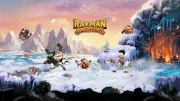

Rayman Adventures for PC is a breathe of fresh air game that will take you to different places around the world. You will serve as Rayman’s guide in his adventure. Together, you will cross the vast oceans, forests, mountains and deserts. Are you ready for a new adventure? Set on your PC and let the game begin!
This is an easy game to play. If you have played other adventure and running game before, then it will be easier for you to play Rayman Adventures for PC this time. All you need to do is guide Rayman in running and collecting the Incrediballs. A lot of adventure is waiting for you!